Antipodal Symmetry
MTEX allows to identify antipodal directions to model axes and to identify misorientations with oposite rotational angle. The later is required when working with misorientations between grains of the same phase and the order of the grains is arbitrary.
Directions vs. Axes
In MTEX it is possible to consider three dimensional vectors either as directions or as axes. The key option to distinguish between both interpretations is antipodal.
Consider a pair of vectors
v1 = vector3d(1,1,2); v2 = vector3d(1,1,-2);
and plots them in a spherical projection
plot([v1,v2],'label',{'v_1','v_2'})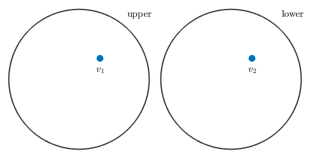
These vectors will appear either on the upper or on the lower hemisphere. In order to treat these vectors as axes, i.e. in order to assume antipodal symmetry - one has to use the keyword antipodal.
plot([v1,v2],'label',{'v_1','v_2'},'antipodal')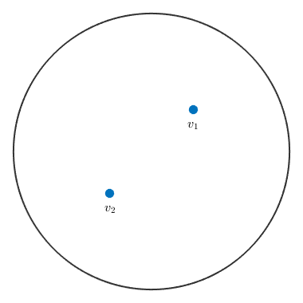
Now the direction v_2 is identified with the direction -v_2 which plots at the upper hemisphere.
The Angle between Directions and Axes
Another example, where antipodal symmetry matters is the angle between two vectors. In the absence of antipodal geometry we have
angle(v1,v2) / degree
ans = 109.4712
whereas, if antipodal symmetry is assumed we obtain
angle(v1,v2,'antipodal') / degreeans = 70.5288
Antipodal Symmetry in Experimental Pole Figures
Due to Friedel's law experimental pole figures always provide antipodal symmetry. One consequence of this fact is that MTEX plots pole figure data always on the upper hemisphere. Moreover if you annotate a certain direction to pole figure data, it is always interpreted as an axis, i.e. projected to the upper hemisphere if necessary
mtexdata dubna % plot the first pole figure plot(pf({1})) % annotate a axis on the souther hemisphere annotate(vector3d(1,0,-1),'labeled','backgroundColor','w')
loading data ... saving data to /home/hielscher/mtex/master/data/dubna.mat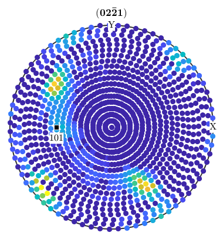
Antipodal Symmetry in Recalculated Pole Figures
However, in the case of pole figures calculated from an ODF antipodal symmetry is in general not present.
% some prefered orientation o = orientation('Euler',20*degree,30*degree,0,'ZYZ',CS); % define an unimodal ODF odf = unimodalODF(o); % plot pole figures plotPDF(odf,[Miller(1,2,2,CS),-Miller(1,2,2,CS)])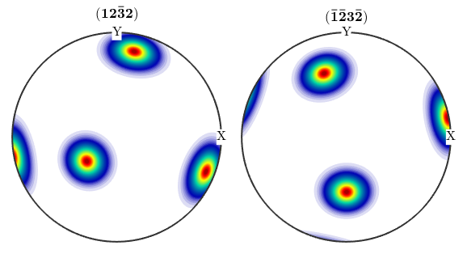
Hence, if one wants to compare calculated pole figures with experimental ones, one has to add antipodal symmetry.
plotPDF(odf,Miller(1,2,2,CS),'antipodal')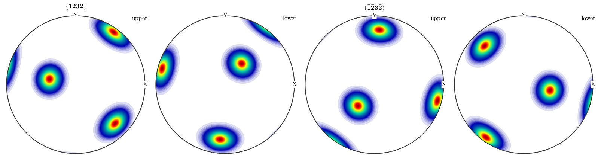
Antipodal Symmetry in Inverse Pole Figures
The same reasoning as above holds true for inverse pole figures. If we look at complete, inverse pole figures they do not posses antipodal symmetry in general
plotIPDF(odf,[yvector,-yvector],'complete')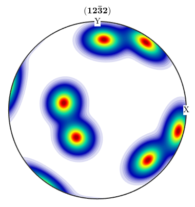 However, if we add the keyword antipodal, antipodal symmetry is enforced.
plotIPDF(odf,yvector,'antipodal','complete')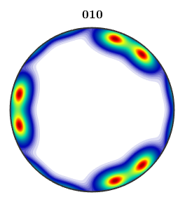
Notice how MTEX, automatically reduces the fundamental region of inverse pole figures in the case that antipodal symmetry is present.
plotIPDF(odf,yvector)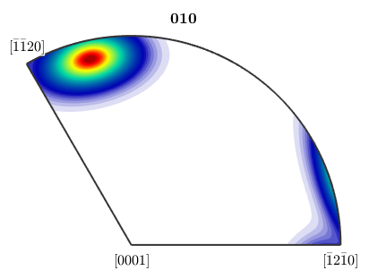
plotIPDF(odf,yvector,'antipodal')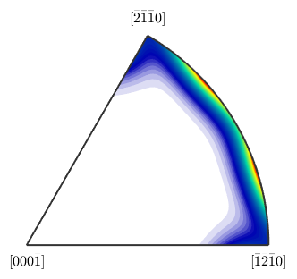
EBSD Colocoding
Antipodal symmetry effects also the colocoding of ebsd plots. Let's first import some data.
mtexdata forsteriteNow we plot these data with a colorcoding according to the inverse (1,0,0) pole figure. If we use the Laue group for inverse pole figure color coding we add antipodal symmetry to the inverse pole figure
oM = ipdfHSVOrientationMapping(ebsd('fo').CS.Laue); % the colorcode plot(oM)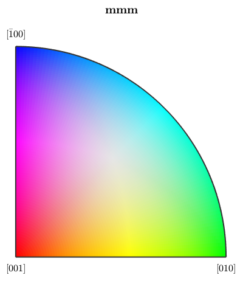
Here the colorized data
plot(ebsd('fo'),oM.orientation2color(ebsd('fo').orientations))

If we use the point group of proper rotations this antipodal symmetry is not present and a larger region of the inverse pole figure is colorized
oM = ipdfHSVOrientationMapping(ebsd('fo').CS.properGroup); % the colorcode plot(oM)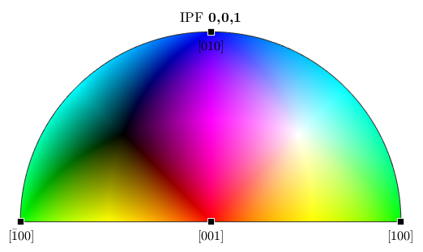
Here the colorized data
plot(ebsd('fo'),oM.orientation2color(ebsd('fo').orientations))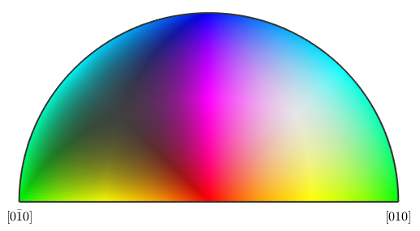
| DocHelp 0.1 beta |